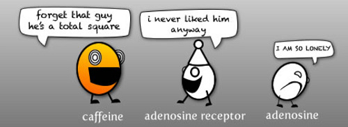
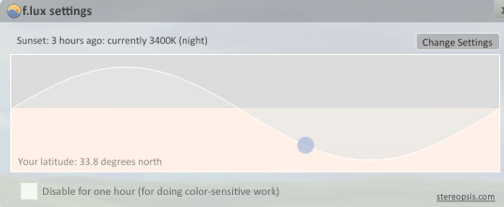

Arrows to navigate,
“P” for presentation mode,
“N” to reveal content
Koffein,
Produktivität,
Schlaf und so
@moeffju

Die Frage:
Macht Koffein mich wirklich...
... wacher?
... produktiver?
Meine Antwort:
Nein.
Let's get science-y!
Wir messen unsere Produktivität
mit Koffein
ohne Koffein
Anekdoten sind keine Daten
(aber besser als gar nichts)
Produktivität
http://www.kk.org/quantifiedself/2009/10/the-false-god-of-coffee.php
Was macht Koffein?
Koffein
Exkurs
Adenosin
Was macht Adenosin?
Adenosin blockiert die Ausschüttung von allen belebenden und aktivierenden Neurotransmittern wie zum Beispiel Dopamin, Acetylcholin oder Noradrenalin. (Wikipedia: Adenosin)
Reguliert Schlaf-/Wach-Zentren des Gehirns.
Und Koffein?
Koffein ist ein Adenosin-Antagonist.
 Source: The Oatmeal
Das bedeutet...
Koffein macht nicht wacher
Aber unterdrückt das Müdigkeitsgefühl
(Zum Beispiel auch in den Muskeln.)
... und das Adenosin lungert derweil rum
... und fühlt sich allein :(
Und das hat Folgen
Koffein hält ~5-6h vor
(bei Rauchern kürzer; während der Menstruation länger)
Adenosin sammelt sich an
Irgendwann kommt der Crash
Erschöpfung wird nur ausgeblendet
Und dann mit mehr Koffein übertüncht
Der Körper reagiert
Mehr Rezeptoren für Adenosin
=> Toleranz entsteht, Dosis muss erhöht werden
Toleranz entsteht innerhalb einer Woche
... fast unabhängig von der Dosis
Die Folgen
When regular caffeine users were given caffeine this simply returned them to their baseline, and did not enhance their alertness. Non caffeine users saw no benefit from taking caffeine.
http://theness.com/neurologicablog/?p=2023
Die Folgen (cont'd)
The take home is that regular use of caffeine produces no benefit to alertness, energy, or function. Regular caffeine users are simply staving off caffeine withdrawal with every dose – using caffeine just to return them to their baseline.
http://theness.com/neurologicablog/?p=2023
Weg davon
Entzug dauert 2-6 Tage
Entzugserscheinungen werden stärker mit höherer gewohnter
Dosis
Kopfschmerzen, Reizbarkeit, Schlafprobleme
Danach muss der Tagesrhythmus wieder normalisiert werden (bis zu vier Wochen)
Licht und Schatten
Wir starren in helle Bildschirme
Wir sind umgeben von hellen LEDs
(vorzugsweise blau und weiß)
Licht ist ein Signal an unser Gehirn:
Es ist Tag!
Es werde Unlicht!
Tatsächlich ist nicht immer Tag.
f.lux to the rescue!
Es werde Unlicht! (…)
F.lux
makes the color of your computer's display adapt to the time of day, warm at night and like sunlight during the day.

Fragen?
Viel Spaß mit
psychoaktiven Substanzen!
Schlaft gut
und
seid produktiv!
Kaffeepause!
Danke!
@moeffju
(follow me on Twitter!)